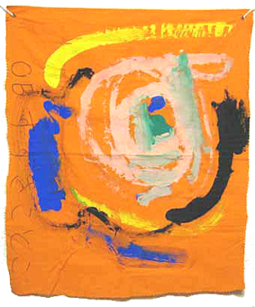

2026/8/11 更新
1997.1.1開設
keyword[tw] or [ot]，Mesh[mh]，著者[au]，フルネーム [fau], 1st author [1au], 施設[ad], タイトル[ti]，言語
: eng[la] or jpn[la]，出版年 : 2002:2004[dp]，雑誌名 : circulation[ta]
[tw] (jacc[ta] or J Cardiovasc Electrophysiol [ta] or Heart Rhythm [ta])
2025/4/1 : 日本小児心電学会の代表幹事に就任しました。 web site
2022/11/11, 12に大阪市中央公会堂で
第26回日本小児心電学会学術集会を会長として開催しました
→学術集会website 動画
2020/12/25の読売新聞(関西・中国・四国)に記事が掲載されました → 読売新聞 記事拡大
2020/1月 : 大阪市立総合医療センターに2006年に転勤してから12年で小児不整脈科の
アブレーション件数が1000件を越えたのを記念して，シニアレジデントの加藤有子先生に
まとめてもらった論文が ，Heart Rhythm (アメリカ不整脈学会雑誌)に掲載されました．
2019年4月，リズミア(Rhythmia)というアブレーション治療用の新しい機械が導入されました．最新の3D mappingシステムで，さらに高精度での治療が可能になりました．
2015年10月，西日本で初となるCARTO UNIVUシステムが導入されました．
こどもの不整脈カテーテル治療の被曝量が劇的に軽減されました．
概要へのリンクです．→ UNIVUシステム導入による被曝量の軽減について
2016/5/15の読売新聞(関西・中国・四国)に記事が掲載されました．
記事のpdfへのリンクです．→ 読売新聞 記事
2014年4月，読売新聞で「大阪市立総合医療センター・小児不整脈科」を採りあげて頂きました．
記事のpdfへのリンクです．→ 読売新聞 記事
web版です． → 読売新聞 記事「深化する医療」
2012年4月、アブレーション治療専用のカテーテル検査室が完成しました。
2010年12月18日 : 「乳児の先天性接合部頻拍」に対する
アブレーション治療について記者会見を開き各社で報道されました．
ニュースがここから視聴できます．TV ,
TV(NHK_mobile)
記事のpdfへのリンクです．→ 記事
2009年7月:日赤和歌山医療センターから中村好秀先生をお迎えし，日本初の「小児不整脈科」 が設立されました．
2006年4月: 東京女子医科大学から，大阪市立総合医療センター に転勤しました．
県立尼崎病院・心臓センター外来にて (2001.10)
2008.12.28. 小学校二年生の娘が学校で初めて詩を書いてきました．
う〜ん 何度読んでも，すばらしい詩です．母親譲りの才能だそうです (おやばか．．．)

2004.5.
娘が4歳の誕生日に幼稚園で自作した旗です．
{kind=link}